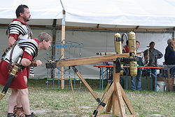
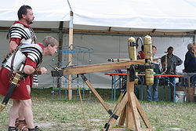
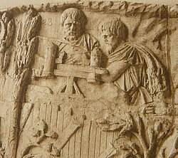
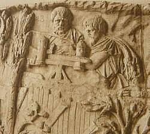

Main
Scorpion catapults (also called a scorpio) were different from a regular catapults. Unlike other catapults, it was used to attack people instead of fortifications like a sort of crossbow.
Stats
Scorpion:
-Range: 100-400 feet
-Projectile: 1 foot long arrow or rock
-Speed: 150-250 feet per second
-Power: 500-1000 pounds of force
How it's built
A scorpion catapult was made up of a wooden or metal base and used ropes to build and store potential energy in the arms of the catapult. Since the scorpion was used to attack people, it was designed to be more accurate and less powerful than other catapults. It was also designed to be more compact and easier to carry around.
Images
 


 
